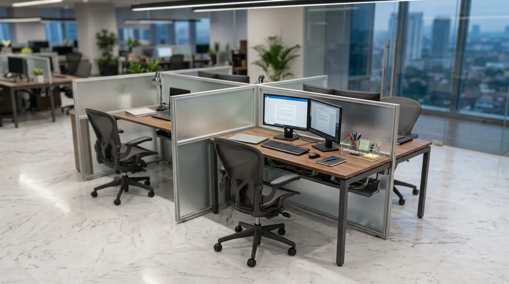

Mengapa Perusahaan Membutuhkan Kontraktor Partisi Meja Staff Jakarta Professional?
Perusahaan membutuhkan kontraktor partisi meja staff Jakarta profesional karena perencanaan sekat meja yang presisi mampu memaksimalkan kapasitas lantai kerja, menjaga privasi visual karyawan, serta meningkatkan fokus dan konsentrasi operasional tanpa mengorbankan kenyamanan kolaborasi. Berdasarkan data Jakarta Office Ergonomics Index 2025-2026, penggunaan partisi meja kerja berspesifikasi akustik mampu menekan tingkat gangguan suara antar-staf hingga 41,2% di area operasional berkonsep terbuka (open space). Laporan Commercial Furniture Spatial Report 2025 juga mencatat bahwa 86% manajer operasional di kawasan bisnis Jakarta Selatan mengutamakan penggunaan modul meja cubicle kustom untuk menghemat alokasi luas ruangan hingga 28,5% dibanding penggunaan meja terpisah konvensional.
Menciptakan iklim kerja yang kondusif di area staf berbanding lurus dengan peningkatan produktivitas bulanan perusahaan. Sekat meja yang dirancang secara tepat mencegah gangguan pandangan langsung saat staf bekerja dan memberikan tempat penyimpan kabel (cable management) yang rapi. Oleh karena itu, bermitra bersama penyedia perancangan furniture terpercaya dan melengkapi area kerja melalui distributor Perlengkapan Kantor merupakan keputusan bisnis yang sangat tepat.
Tabel spesifikasi material partisi meja kerja staff berikut dapat membantu Anda dalam memilih opsi terbaik sesuai kebutuhan dan anggaran:
| Jenis Material Sekat | Daya Tahan Fisik | Tingkat Peredaman Suara | Tampilan Estetika Visual |
|---|---|---|---|
| Acoustic Fabric Panel | Sangat Tinggi (Anti-Sobek) | Sangat Tinggi (Menyerap Suara) | Modern, Warm, & Professional |
| Kaca Tempered / Frosted | Sangat Tinggi (Tahan Gores) | Sedang (Pantulan Suara) | Elegan, Bright, & Transparan |
| Kayu HPL (High Pressure Laminate) | Tinggi (Tahan Panas & Air) | Sedang (Kerapatan Padat) | Minimalis, Natural, & Clean |
| Akrilik Bening / Buram | Cukup Tinggi (Mudah Dibersihkan) | Rendah (Hanya Sekat Visual) | Minimalis & Ringan |
- Tinggi sekat partisi ideal untuk area kerja staf adalah 35 cm hingga 45 cm di atas permukaan meja agar tetap memungkinkan kontak mata saat berdiri tanpa menghalangi pandangan saat duduk.
- Penggunaan panel kain akustik dengan warna abu-abu atau biru korporat menciptakan suasana kerja yang tenang dan mereduksi kelelahan visual akibat paparan layar monitor.
- Jalur kabel terintegrasi di dalam tiang partisi meja mencegah bahaya tersandung dan memudahkan koneksi listrik ke perangkat laptop serta printer lokal.
Material Apa Saja yang Paling Direkomendasikan untuk Partisi Meja Kerja Staff?
Material yang paling direkomendasikan untuk partisi meja kerja staff meliputi panel busa berlapis kain akustik (acoustic fabric), lembaran HPL berbahan dasar MDF atau plywood, serta panel kaca frosted dengan lis bingkai aluminium jepit. Kombinasi kain akustik dan lis aluminium memberikan kesan visual yang modern, kokoh, dan fungsional di lingkungan perkantoran.

Hasil pengerjaan dan pemasangan partisi meja kerja staff cubicle modern dari penyedia resmi Perlengkapan Kantor di gedung perkantoran Jakarta.
Keunggulan Masing-Masing Bahan Sekat Meja Kerja:
- Panel Busa Kain Akustik: Meredam dengung suara percakapan telepon dan dapat difungsikan sebagai papan pin (pinboard) untuk menempelkan catatan kerja penting.
- Lapisan HPL Tahan Gores: Sangat mudah dibersihkan dari tumpahan noda kopi atau minuman, tahan panas cangkir, serta memiliki beragam pilihan motif serat kayu elegan.
- Kaca Buram / Frosted Glass: Meneruskan pencahayaan alami ke seluruh area meja tanpa mengurangi privasi kerahasiaan dokumen kerja staf.
- Rangka Aluminium Anodized: Menjepit panel sekat secara presisi, kokoh, tidak mudah goyah, serta tahan karat dari kelembapan pendingin udara AC ruangan.
Bagaimana Prosedur Pengerjaan dan Instalasi Partisi Meja Staff di Lokasi?
Prosedur pengerjaan dan instalasi partisi meja staff di lokasi diawali dengan survei pengukuran dimensi ruangan, pembuatan layout 3D CAD, fabrikasi komponen di workshop, hingga perakitan modul meja dan penyambungan jalur kabel (cable grommet) di lokasi kantor.
Tahapan Perakitan Meja Kerja Cubicle yang Sistematis:
- Pengukuran Presisi Lokasi: Mengukur jarak stop kontak lantai (floor socket) dan tiang gedung agar posisi konfigurasi meja tidak menghalangi jalur evakuasi atau akses vital.
- Fabrikasi Komponen Utama: Memotong daun meja kayu presisi tinggi dan memproduksi panel sekat kustom sesuai batas toleransi dimensi standar industri.
- Instalasi Rangka dan Sekat: Merakit tiang penyangga besi berpenyeimbang lantai (leveler), memasang daun meja, dan menjepit panel partisi secara kokoh.
- Manajemen Jalur Kabel: Menyusun rapi jalur kabel listrik, data LAN, dan telepon ke dalam baki kabel (cable tray) di bawah meja agar permukaan meja kerja selalu bebas dari kabel berantakan.
- Guna mewujudkan ruang kerja staf yang rapi dan nyaman, hubungi tim ahli Perlengkapan Kantor kami sekarang juga dan dapatkan penawaran harga grosir furniture B2B terbaik.
- Lihat opsi sekat portabel pada ulasan sekat meja kerja akrilik kantor untuk solusi pemasangan cepat tanpa bor.
- Pertimbangkan kelebihan layout pada perbandingan konsep open space kantor vs kubikal sebelum menentukan tata letak lantai kerja.
Faktor Apa Saja yang Memengaruhi Durabilitas Meja Kerja Staff Perkantoran?
Faktor yang memengaruhi durabilitas meja kerja staff perkantoran meliputi kualitas bahan dasar papan kayu (MDF/Plywood padat), ketebalan lapisan edging PVC pada tepi meja, kekuatan besi penyangga ber-cat powder coating, serta kepresisian engsel penyambung antar-modul. Meja berspesifikasi standar industri tahan terhadap beban perangkat komputer berat dan gesekan harian.
- Bahan Dasar Plywood / MDF Padat: Memiliki daya topang beban yang kuat dan tidak mudah melengkung meski dibebani monitor ganda serta dokumen arsip.
- Lapisan Edging PVC Tebal (2 mm): Melindungi siku daun meja dari benturan kursi kerja dan mencegah resapan air yang dapat merusak lapisan kayu dalam.
- Finishing Besi Powder Coating: Melapisi struktur kaki meja dengan cat oven anti gores yang tahan karat dan tidak mudah mengelupas.
- Sistem Knockdown Kuat: Memungkinkan meja dibongkar dan dirakit kembali puluhan kali saat perusahaan melakukan renovasi atau pindah gedung kantor.
Memastikan seluruh komponen furniture dibuat menggunakan bahan pilihan adalah kunci menjaga keawetan investasi aset kantor Anda. Bekerja sama dengan distributor resmi Perlengkapan Kantor memberikan kepastian mutu produk bergaransi sah.
Pertanyaan Populer Seputar Kontraktor Partisi Meja Staff Jakarta (FAQ)
Kesimpulan Praktis
Menggunakan jasa kontraktor partisi meja staff Jakarta profesional merupakan investasi terbaik untuk menghadirkan tata ruang kerja yang rapi, ergonomis, dan mendukung fokus operasional staf secara maksimal. Didukung oleh kapabilitas produksi terpercaya dan pasokan lengkap dari Perlengkapan Kantor, seluruh kebutuhan interior dan furniture bisnis Anda terjamin terpenuhi secara sempurna.
Wujudkan layout ruang kerja impian untuk meningkatkan produktivitas tim Anda. Hubungi tim konsultan interior kami hari ini untuk konsultasi desain 3D gratis, survei lokasi, dan penawaran paket harga custom terbaik!

Penulis: Tim Redaksi Perlengkapan Kantor
Divisi perancangan interior dan fabrikasi furniture perkantoran di Perlengkapan Kantor. Berpengalaman menangani proyek custom meja cubicle, partisi kantor akustik, dan penataan ruang kerja korporat modern di seluruh wilayah Jakarta dan sekitarnya. Ditinjau oleh Pakar Desain Interior & Furniture Ergonomis Perkantoran.